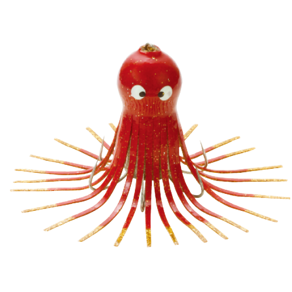
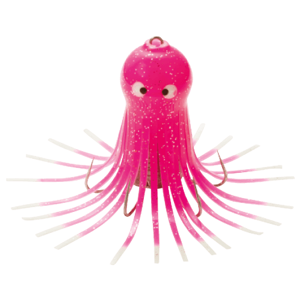
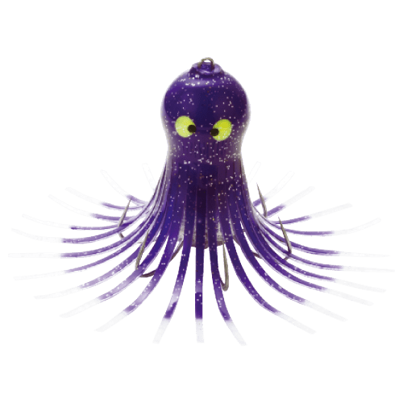
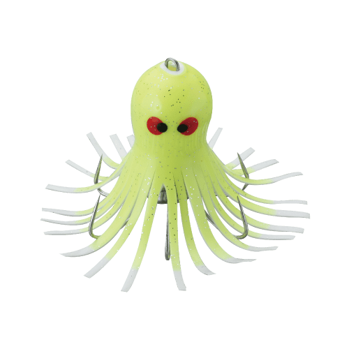

タコゆらハンター
タコゆらハンターはYAMASHITA（ヤマシタ）の岸タコ釣り用アイテムです。
タコベイトの脚先の動きを強調する「アピールソックス」と、ベイトが踊る「ゆらゆらヘッド形状」で、堤防からのタコ釣りでアピール抜群の定番アイテム。夏の小ダコに使いやすいSサイズと、大ダコにも対応するLサイズがあります。

画像出典:ヤマシタ公式HP
スペック
- メーカー
- YAMASHITA（ヤマシタ）
- タイプ
- 岸釣り用タコエギ（タコベイト仕掛け）
- サイズ
- S（鉛10号相当）／L（鉛20号相当）
- カラー
- 全9色
- ターゲット
- マダコ
▼今すぐチェック

タコゆらハンターの特徴
脚先が踊るアピールソックスで、岸からタコを誘う
-
アピールソックスで脚先が動く
タコベイトの脚先の動きを強調する「アピールソックス」を全アイテムに採用。小さな動きでも脚先が揺れて、タコにアピールします。
-
ゆらゆらヘッド形状
ベイトが踊るような「ゆらゆらヘッド形状」で、底でズル引きしたり小突いたりするだけで、生き物のような動きを出せます。
-
2サイズと連結リング
夏の小ダコに効くSサイズ（10号相当）と、大ダコにも対応するLサイズ（20号相当）。連結に便利な連結リング付きで、2つ連ねてアピールを強めることもできます。
タコゆらハンターの使い方
基本は堤防の際や底を、ズル引きや小突きで誘う釣り方。仕掛けを底まで落としたら、ロッドを小刻みに動かしてタコベイトを踊らせ、タコが乗るのを待ちます。
重みが乗ったら、少し待ってからしっかりアワセて一気に引きはがしましょう。連結リングでカラー違いを2つ付けると、アピールが強くなります。
タコゆらハンターの得意な状況
夏〜秋の堤防や漁港からのマダコ釣り。岸壁の際や敷石、捨て石の周りなど、タコが潜んでいる場所を探る釣りで使います。
ワンポイント
小ダコが多い夏場はSサイズ、大きいタコを狙うときや水深がある場所ではLサイズと使い分けましょう。カラーは赤系・ピンク系・夜光・ケイムラなどを組み合わせてローテーションするのがおすすめです。
サイズの使い分け
| サイズ | 鉛 | 得意な場面 |
|---|---|---|
| S | 10号相当 | 夏場の小ダコや、浅い堤防に |
| L | 20号相当 | 大ダコ狙いや、水深のある場所に |
ヤマシタには脚の長い「タコゆらハンター 脚長W」や、オモリを自分で選べる「鉛なし」モデルもあります。
オススメカラー
公式ラインナップから4色を紹介します（カラー名は公式の表記のまま）。

RG（レッド・金ラメ）赤に金ラメの定番カラー。タコ釣りの基本の1色。

PF（ピンク・夜光）ピンクに夜光をプラス。朝夕のマヅメや濁りに。

VK（バイオレット・ケイムラ）バイオレットにケイムラ。日中や澄み潮で変化をつけたいときに。

KYW（ケイムライエロー・ホワイト）ケイムラのイエローとホワイト。目立つ色で反応を見たいときに。
画像出典:ヤマシタ公式HP
タコゆらハンターに似ているルアー
-
 エギ王K
ヤマシタ
詳細はこちら＞
エギ王K
ヤマシタ
詳細はこちら＞
同じヤマシタのアオリイカ用エギ。タコ釣りの合間にイカも狙いたいときに。
-
 ナオリーレンジ
ヤマシタ
詳細はこちら＞
ナオリーレンジ
ヤマシタ
詳細はこちら＞
同じヤマシタのライトエギング用エギ。堤防でヤリイカやコウイカも狙いたいときに。
-
 エギ王Kディープ
ヤマシタ
詳細はこちら＞
エギ王Kディープ
ヤマシタ
詳細はこちら＞
同じヤマシタのディープタイプのエギ。深場でアオリイカを狙いたいときに。